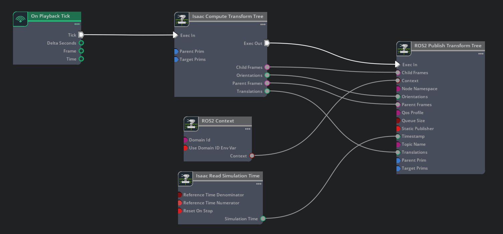
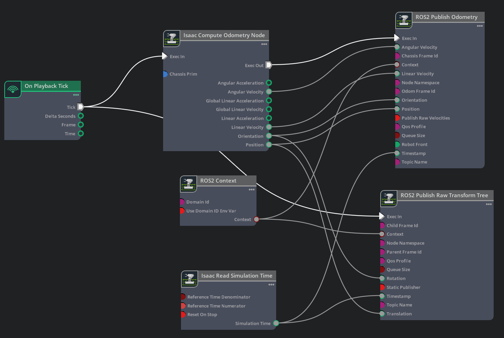
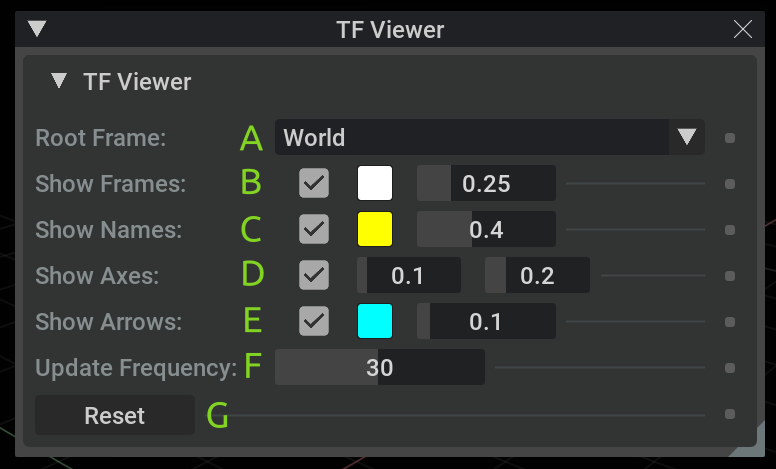
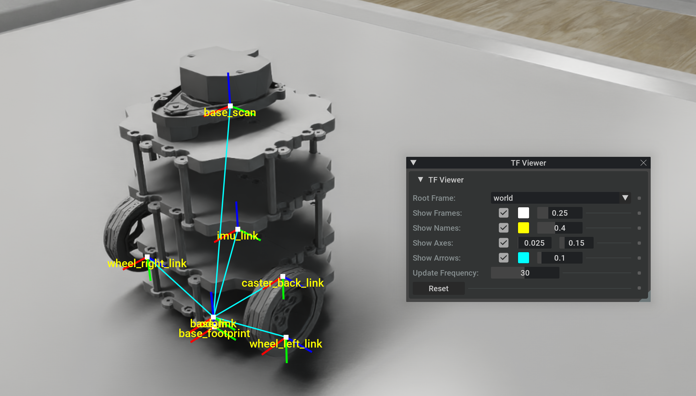
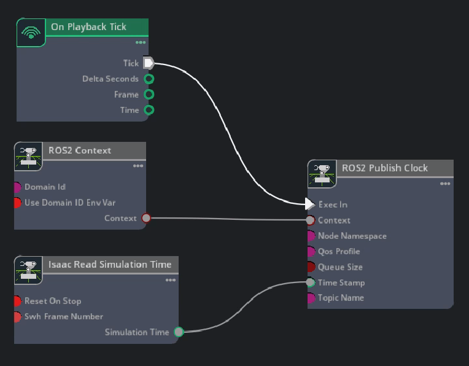
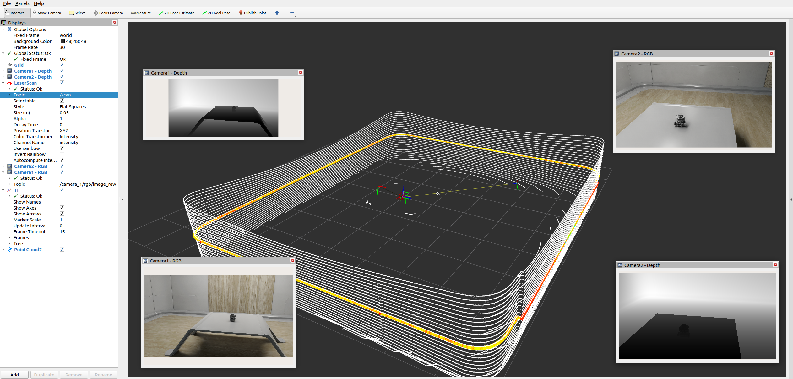

ROS 2 变换树与里程计#
学习目标#
在本示例中，您将：
添加一个变换发布器，将相机位置作为变换树的一部分进行发布。
发布对象的相对位姿。
发布机器人的里程计。
使用菜单快捷方式创建变换和里程计发布器。
在 Isaac Sim 中查看变换树。
入门指南#
先决条件
已完成 URDF 导入：Turtlebot、ROS 2 相机 和 RTX 激光雷达传感器 教程。
已完成 ROS 2 安装，确保 ROS 2 可用且 ROS 2 扩展已启用。
变换树发布器#
假设你已经完成了 ROS 2 相机教程，并且场景中已有两个相机，让我们将这些相机添加到变换树中，以便你可以在全局坐标系中跟踪相机的位置。
Transform Publisher#
在 Isaac Sim 6.0 及更高版本中，ROS 2 Publish Transform Tree 节点从 Isaac Compute Transform Tree 节点消费预先计算好的帧数据，而不是在内部解析 Prim。如果您正在升级旧图，请参阅 迁移 ROS2 Publish Transform Tree。
在 Stage 面板中，选择
/World，以便在相机旁边创建新的 Action Graph，因为该图将发布这些相机的数据。打开 Window > Graph Editors > Action Graph，点击 New Action Graph，并将其命名为ActionGraph_tf_ground_truth（生成的图路径为：/World/ActionGraph_tf_ground_truth）。 添加 On Playback Tick、Isaac Read Simulation Time、ROS2 Context、Isaac Compute Transform Tree 和 ROS 2 Publish Transform Tree 节点。 将 On Playback Tick 节点的 tick 输出连接到 Compute 节点的 execIn，将 ROS2 Context 节点的 context 输出连接到 Publish 节点的 context，并将 Isaac Read Simulation Time 节点的 simulationTime 输出连接到 Publish 节点的 timeStamp。构建一个与下图匹配的 Action Graph。将 Compute 节点的输出连接到 Publish 节点：execOut → execIn，parentFrames → parentFrames，childFrames → childFrames，translations → translations，orientations → orientations。
在 Isaac Compute Transform Tree 节点的 Property 选项卡中，将 Camera_1 和 Camera_2 都添加到 targetPrims 字段。
在支持 ROS 2 的终端中检查变换树：
ros2 topic echo /tf。验证两个相机是否都在变换树上。在视口中移动相机，并观察相机位姿的变化。


TF 发布在底层的工作原理及原因#
默认情况下，Isaac Sim 会为单个仿真时间戳发布一个合并的 tf2_msgs/msg/TFMessage，该数据聚合自进程内聚合组中的兼容 TF 发布节点。聚合组由 ROS 域、主题名称、动态或静态发布模式以及服务质量 (QoS) 配置文件定义。
TF 聚合的存在是为了让 ROS 2 消费者在每个仿真刻度接收一个连贯的变换快照。典型的机器人图可能包含多个 TF 发布节点，例如一个用于 odom 到 base_link 的原始发布节点，以及另一个用于机器人链接树的发布节点。如果每个节点独立发布，下游 TF 监听器可能会根据消息顺序观察到来自同一仿真时间的部分树。聚合还减少了 ROS 2 发布者的发现和消息处理开销，因为 Isaac Sim 对每个兼容的 TF 组使用一个发布者，而不是为每个 OmniGraph 节点使用一个发布者。
对于动态 TF 话题（如 /tf），聚合管理器通常会保持当前时间戳处于打开状态，直到接收到更新的时间戳。这使得每个在相同仿真时间运行的发布者节点都有机会在 Isaac Sim 发出合并消息之前贡献其数据。因此，最近提交的时间戳可能会比最近发布的批次超前一个仿真刻度。如果时间戳没有推进，例如使用常量/默认时间戳输入，待处理的批次将在下一个聚合刷新周期被刷新。
对于静态 TF 话题（如 /tf_static），聚合管理器会缓存每个贡献者的最新静态变换，并且仅在静态变换发生变化或贡献者被移除时才重新发布。这在保留预期的 transient-local 静态 TF 行为的同时，避免了在每个刻度发布相同的静态变换。
如果同一聚合组中的两个贡献者在同一批次中发布了具有相同子帧的变换，Isaac Sim 将保留第一个注册贡献者的变换并记录警告。请确保在单个 TF 话题内子帧 ID 保持唯一。
若要调试单个 TF 发布者的输出，请使用 /exts/isaacsim.ros2.nodes/tfAggregation/enabled 设置禁用聚合：
./isaac-sim.sh --/exts/isaacsim.ros2.nodes/tfAggregation/enabled=false
关节变换#
若要获取关节机器人上每个连杆的变换，请将机器人的关节根节点添加到为 ROS 2 Publish Transform Tree 节点提供输入的 Isaac Compute Transform Tree 节点的 targetPrims 字段中。关节根节点之后的所有连杆将自动发布。
重要
如果生成的关节机器人变换树选择了错误的链接作为根链接，请使用以下步骤手动选择关节根链接。
在 Stage Tree 中选择机器人的根 prim，在其 Raw USD Properties 选项卡中，找到 Articulation Root 部分。点击该部分右上角的 X 将其删除。
在 Stage Tree 中选择所需的链接，在其 Raw USD Properties 选项卡中，点击 +ADD 按钮，并添加 Physics > Articulation Root。
更改关节根后，保存文件并重新加载。
发布相对变换#
默认情况下，变换是相对于世界坐标系的。您可以检查 Turtlebot 的 /base_link 变换是否相对于 /World 发布。如果您希望获取相对于其他对象（例如相机）的变换，请在 Isaac Compute Transform Tree 节点上设置 parentPrim 字段。在 Compute 节点的 parentPrim 字段中添加 Camera_1，在更改属性之间 Stop 并 Play 仿真，您可以观察到 /base_link 变换现在相对于 Camera_1。
设置里程计#
要为机器人设置里程计，请发布里程计 ROS 消息及其对应的变换。
Turtlebot3 机器人在
/World/tb3_burger_processed/Geometry/base_footprint/base_link上应用了 Articulation Root API，并在/World/tb3_burger_processed上应用了IsaacRobotAPI且填充了isaac:physics:robotLinks，因此无需手动设置 articulation root。要设置里程计发布者，请在 Stage 面板中选择主机器人 prim
/World/tb3_burger_processed，以便直接在其下创建新的 Action Graph。机器人本地发布者（如里程计、odom->base_link以及机器人链接 TF）作用于整个机器人关节结构，因此它们应位于机器人根节点下，而不是单个链接下。通过前往 Window > Graph Editors > Action Graph 并点击 New Action Graph 来打开可视化脚本编辑器；将其命名为ROS_OdomTF。生成的图形路径为/World/tb3_burger_processed/ROS_OdomTF。构建一个与下图匹配的 Action Graph。
在 Isaac Compute Odometry Node 的 Property 选项卡中：
将 Turtlebot prim（即
/World/tb3_burger_processed）添加到其 Chassis Prim 输入字段。该节点计算机器人相对于其起始位置的位置。其输出将同时馈入/odomROS 2 主题的发布者，以及发布从/odom坐标系到/base_link坐标系的单一变换的 TF 发布者。
在 ROS2 Publish Raw Transform Tree 节点的 Property 选项卡中：
将 childFrameId 输入字段设置为
base_link。将 parentFrameId 输入字段设置为
odom。这将启用在变换树中发布 odom -> base_link 帧。
在 ROS2 Publish Odometry 节点的 Property 选项卡中：
将 chassisFrameId 输入字段设置为
base_link。将 odomFrameId 输入字段设置为
odom。这将启用在变换树中发布 odom -> base_link 帧。

注意
ROS2 Publish Odometry 节点发布完整的 3D 速度信息。线速度和角速度均包含所有三个维度（x、y 和 z），从而能够更完整地表示机器人的运动状态。
此时，我们已发布里程计数据，且我们的变换树仅包含 odom -> base_link。我们还想将 base_link 下的相关机器人 prim 添加到变换树中。为此，请在图中添加一个 Isaac Compute Transform Tree 节点和一个 ROS 2 Publish Transform Tree 节点。将 Compute 节点的输出（execOut、parentFrames、childFrames、translations、orientations）连接到 Publish 节点对应的输入，并像上述其他节点一样，将 Publish 节点上的 Exec In、Context 和 Timestamp 字段进行相应连接。
在 Isaac Compute Transform Tree 节点的 Property 选项卡中：
将 parentPrim 输入字段设置为 Turtlebot Prim 中 base_link 的路径：
/World/tb3_burger_processed/Geometry/base_footprint/base_link。将 targetPrims 输入字段设置为 TurtleBot 根 prim：
/World/tb3_burger_processed。该节点会展开此机器人根节点，并发布base_scan、caster_back_link、imu_link、wheel_left_link和wheel_right_link相对于base_link的变换。
保留
/World/tb3_burger_processed/ROS_OdomTF中现有的里程计、odom->base_link以及机器人链接 TF 发布者。不要在机器人图中添加world->odom发布者。该变换是场景级真值，因为它描述了机器人的里程计坐标系在世界中的位置。在完整的导航栈中，诸如 Nav2 AMCL 这样的定位包可以发布全局坐标系与 odom 坐标系之间的变换。对于本教程，请在
/World/ActionGraph_tf_ground_truth处创建或更新世界级真值图。如果您已完成“变换发布者”部分，请更新该现有图，而不是创建另一个图。位于Isaac Sim > Samples > ROS2 > Scenario > turtlebot_tutorial.usd的示例场景使用/World/turtlebot3_burger_processed；如果您的导入机器人命名为/World/tb3_burger_processed，请使用 Stage 中匹配的 prim 路径。示例图中的节点名称是自动生成的，无需与您图中的名称匹配。添加一个 Isaac Compute Transform Tree 节点：
将 parentPrim 输入字段留空。如果没有父 prim，计算出的父坐标系为
world。将 targetPrims 输入字段设置为
/World/turtlebot3_burger_processed/Geometry/base_footprint。对于命名为tb3_burger_processed的本地导入机器人，请改用/World/tb3_burger_processed/Geometry/base_footprint。将 On Playback Tick 节点的 tick 输出连接到 execIn 输入。
为平移添加一个 Get Array Index 节点：
将 Isaac Compute Transform Tree 节点的 translations 输出连接到 array 输入。
将 index 输入保留为
0。这将选择计算出的变换数组中的第一个平移。
为旋转添加一个 Get Array Index 节点：
将 Isaac Compute Transform Tree 节点的 orientations 输出连接到 array 输入。
将 index 输入保留为
0。这将选择计算出的变换数组中的第一个旋转。
添加一个 ROS2 Publish Raw Transform Tree 节点：
</将 parentFrameId 输入字段设置为
world。将 childFrameId 输入字段设置为
odom。将 topicName 输入字段设置为
tf。将 Isaac Compute Transform Tree 节点的 execOut 输出连接到 execIn 输入。
将 ROS2 Context 节点的 context 输出连接到 context 输入。
将 Isaac Read Simulation Time 节点的 simulationTime 输出连接到 timeStamp 输入。
将平移 Get Array Index 节点的 value 输出连接到 translation 输入。
将旋转 Get Array Index 节点的 value 输出连接到 rotation 输入。
验证真值图是否与以下内容相似：

按下 Play，并在新的 ROS 源终端中运行以下命令：
ros2 run tf2_tools view_frames
打开生成的 PDF 文件，以观察您从 Isaac Sim 发布的变换树。验证其是否与下图相似。

若要查看 Turtlebot ROS 2 教程中所有发布者和订阅者设置的示例，请打开场景。您可以通过前往 Isaac Sim 内容浏览器并点击 Isaac Sim>Samples>ROS2>Scenario>turtlebot_tutorial.usd 来找到该场景。
图快捷方式#
以下菜单快捷方式用于构建变换和里程计图：
TF 发布者
对于 TF 发布者，请前往 Tools > Robotics > ROS 2 OmniGraphs > TF Publisher。如果您未看到列出的任何 ROS 2 图，则需要先启用 ROS 2 桥接。将弹出一个对话框，询问填充图所需的参数。您必须提供：
图路径和节点命名空间（如果您有的话）。
目标 Prim，如果要在变换中获取完整的关节链，则需包含关节根 API；或者，如果要发布单个 Prim 的变换，则提供单个 Prim。
用作变换参考帧的父 Prim。默认值为 "/World"，但也可以是舞台上的任意帧。
如果已有一个变换发布器，并且想要添加更多要发布的 prim，只要它们具有相同的参考 prim，就可以同时勾选“添加到现有图形”和“添加到现有节点”复选框，提供图形和节点路径，以及要添加到现有图形的新目标 prim。如果想要添加到同一图形但使用不同的参考 prim，它将创建一个新的变换节点，并在存在的情况下使用现有的 tick、内容和时间戳节点。
里程计发布器
对于里程计发布器，请转到 Tools > Robotics > ROS 2 OmniGraphs > Odometry Publisher。将弹出一个对话框，询问用于填充图形所需的参数。您必须提供：
图路径和节点命名空间（如果您有的话）。
包含 Articulation Root API 的 prim，以及用于计算里程计的原点所在的底盘 prim。
在 Isaac Sim 中查看变换树#
Isaac Sim 的变换查看器允许您在视口窗口的模拟场景本身以及由 Isaac Sim 和/或外部 ROS 2 节点发布的变换树（位于 /tf 和 /tf_static 主题下）上进行绘制。
首先，使用 Extension Manager 搜索
isaacsim.ros2.tf_viewer来启用 Isaac Sim 的变换查看器扩展。启用扩展后，请转到顶部菜单栏并点击 Window > TF Viewer 以打开变换查看器控制窗口。

窗口组件：
用于计算变换的坐标系。
是否显示坐标系（标记）。标记颜色。标记大小（相对值）。
是否显示坐标系名称。文本颜色。文本大小（相对值）。
是否显示坐标系的轴（RGB -> XYZ 轴）。轴长度（以米为单位）。轴厚度（相对值）。
是否显示子坐标系与父坐标系之间的连接。线条颜色。线条厚度（相对值）。
坐标系变换更新频率（Hz）。较高的频率可能会降低仿真性能。
重置变换树（清除变换缓冲区）。例如，可用于清除
TF_OLD_DATA警告。
注意
关闭变换查看器窗口会停止显示并清除视口绘制内容。
要开始可视化，请选择用于计算变换的适当根坐标系（例如，根据发布的变换树规范，选择 World 或 world）。
注意
如果
/tf和/或/tf_static主题下存在发布数据，但可视化（或特定根坐标系）未显示：确保在打开 TF Viewer 窗口之前仿真正在运行
关闭并重新打开 TF Viewer 窗口以更新变换订阅
按 TF Viewer 窗口上的 Reset 按钮以重置变换树



RViz2 中的多个传感器#
注意
在 Windows 11 中，根据机器配置，某些带宽密集型主题可能无法在 WSL 中的 RViz2 中进行可视化。
要在 RViz2 中显示多个传感器，需要确保几项关键设置，以保证所有消息同步且时间戳正确。
仿真时间戳
使用 Isaac Read Simulation Time 作为节点，将时间戳馈送到所有发布节点的时间戳中。
ROS 2 时钟
要将仿真时间发布到 ROS 2 时钟主题，您可以按照 运行 ROS 2 时钟发布器 教程中所示设置图形：


frameId 和 topicName
若要在 RViz 中同时可视化所有传感器以及 tf 树，frameId 和 topicName 必须遵循特定的约定，以便 RViz 能够识别它们。下表大致描述了这些约定。若要观察下方的多传感器示例，请查阅 USD 资产，可通过前往 Isaac Sim 内容浏览器并点击 Isaac Sim>Samples>ROS2>Scenario>turtlebot_tutorial.usd 找到该资产。
来源
frameId
nodeNamespace
topicName
类型
Camera RGB
(device_name)_(data_type)
(device_name)/(data_type)
image_raw
rgb
Camera Depth
(device_name)_(data_type)
(device_name)/(data_type)
image_rect_raw
depth
Lidar
base_scan
scan
laser scan
Lidar
base_scan
point_cloud
point_cloud
TF
tf
tf
若要观察下方的 RViz 图像，请确保仿真正在运行。在已加载 ROS 2 环境的终端中，使用以下命令打开提供的配置：
ros2 run rviz2 rviz2 -d <ros2_ws>/src/isaac_tutorials/rviz2/camera_lidar.rviz
RViz 窗口加载完成后，您可以在左侧的 Display 面板中启用和禁用传感器流。


重要
确保在运行 RViz2 节点后，将 use_sim_time ROS 2 参数设置为 true。
这可以确保 RViz2 节点与仿真数据保持同步，尤其是在 RViz2 对 Lidar 数据点的位置进行插值时。
请在新的已加载 ROS 2 环境的终端中使用以下命令设置该参数：
ros2 param set /rviz use_sim_time true
总结#
本教程涵盖了：
用于发布传感器和完整运动学树的 Transform 发布器
用于发布单个变换的原始 Transform 发布器
为 Turtlebot 配置的里程计发布器和 Transform 发布器
在 Isaac Sim 的视口中显示 Transform Viewer
在里程计消息中发布完整的 3D 速度（x, y, z），包括线速度和角速度
后续步骤#
请继续学习 ROS 2 教程系列中的下一个教程 ROS 2 设置发布频率，了解如何为 ROS 2 OmniGraph 节点设置发布频率。
深入学习#
自动生成的话题命名空间——包括 ROS 2 Publish Transform Tree 使用的特殊“最高祖先优先”规则——在 自动 ROS 2 命名空间生成 中有详细说明。